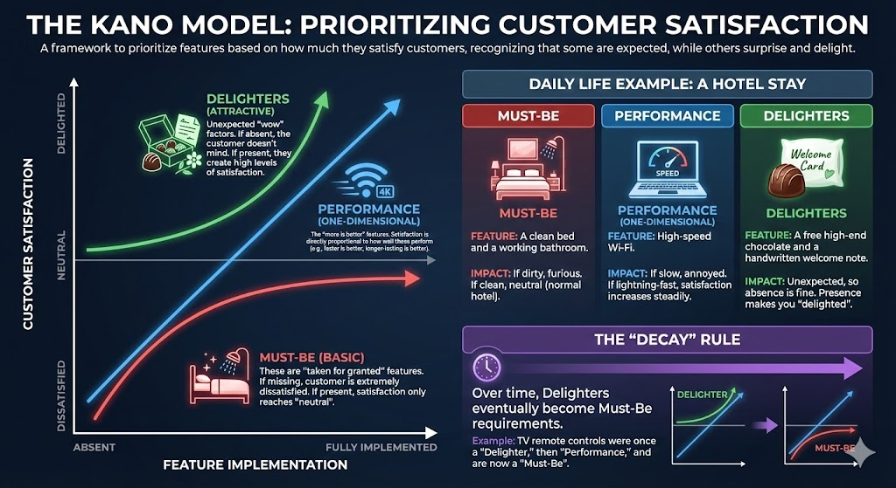
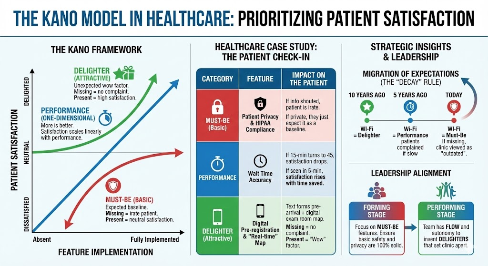

Understand the DNA of satisfaction. Why meeting expectations is just the 'Must-Be' entry fee, and
how the shift from Performance to Delighters happens over time.

🏥 Clinical Excellence & The Patient Journey
Apply the model to a clinic environment. Transition from basic HIPAA compliance (Must-Be) to digital
real-time maps (Delighters) that set your service apart.

The Origin Story
"In 1984, Dr. Noriaki Kano challenged the idea that 'Better Features = Happier
Customers'. He proved that some features (Basic) only prevent anger, while others (Delighters) create
exponential joy. His model revolutionized modern Product Management."
The 3 Tiers of Needs
🛡️
Basic Needs
Must-haves. Dissatisfiers if missing. Invisible if present.
📈
Performance
Linear. More is better. Faster = Happier.
✨
Delighters
Unexpected Wows. High satisfaction, no downside.
Feature Classifier & Plotter
Load an example, then Drag the
Dots on the graph to see how classification changes with Functionality.
Adding puts a dot at center. Drag it to
classify!
Live Analysis
Interact with the graph...
Tooltip
😡 Dissatisfied
😍 Delighted
Low Function
High Function
Interactive Mode: Click and DRAG any dot to move it. Notice how its "Zone"
helps you understand where to invest.